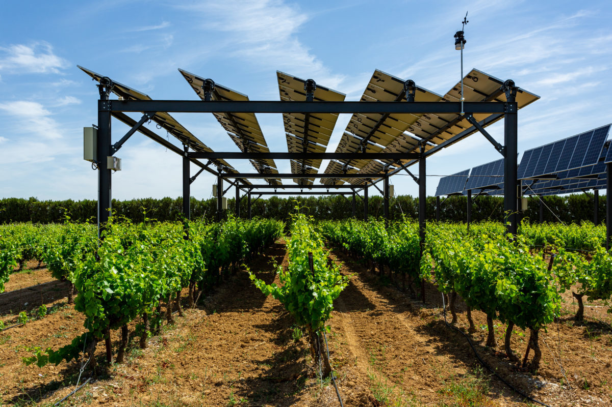

TL;DR Plants waste energy when overexposed to light. Agrivoltaics captures this wasted energy while reducing water needs, increasing crop yields, and diversifying farm income. Implementation challenges remain primarily technical and economic, not conceptual.
The fundamental challenge of our era is to reimagine how to best approach energy and resource management. Reviewing the scientific literature and analyzing ongoing technological developments, I’ve become increasingly convinced that agrivoltaics—the co-location of solar energy generation and agricultural activities on the same footprint—represents one of our most promising paths forward. To explain why, we must examine several interlocking principles generally studied independently.
The Misunderstood Energy Economics of Plants
I often hear a refrain from brilliant colleagues in the energy world: “Plants are inefficient at capturing solar energy. 1 ” While this perspective is understandable, it relies on a specific—and narrow—definition of efficiency. It overlooks that leaves and the photosynthetic mechanisms within them result from billions of years of evolutionary refinement. In many ways, the leaf is an exquisitely engineered solar collector, particularly optimized for low, diffuse light conditions.
The light-harvesting apparatus in a leaf vastly outperforms even our most advanced photovoltaics 2 . Engineers assume that “efficiency” compares energy in versus energy out: More sunlight should create more usable energy and, thus, more growth. However, biology doesn’t work that way. Plants evolved under constant survival pressure, tuning their energy capture systems for scarcity, not abundance—they’re most efficient when light is scarce, as every photon in those moments could mean life or death.
Ironically, when light is abundant, this high efficiency becomes a liability. Plants deliberately deactivate their light capture apparatus through a protective mechanism known as Non-Photochemical Quenching (NPQ). NPQ prevents damage from excessive light (essentially sunburn) by converting the light that cannot be used into heat. From an engineering standpoint, this is considered inefficient: Light that could have powered photosynthesis is wasted. However, it makes sense biologically: survival takes precedence over maximizing growth 3 .
This strategy creates a second problem: heat. To prevent overheating, plants depend on evaporative cooling (i.e., sweating). During periods of active growth, this necessitates substantial amounts of groundwater, most of which is lost to the air instead of being used for biomass production. Nearly all of the water absorbed by irrigated crops evaporates through their leaves. While this process is vital for nutrient transport, it is even more critical for temperature regulation 4 .
Evolutionarily, these “inefficiencies” serve as practical solutions to existential threats. However, from a design perspective, they present opportunities—technology windows where human innovation can optimize resource use without compromising yield. What if we capture solar energy before it reaches the leaf, thus helping to alleviate the stress that excess light creates?
Inside-the-box thinking wrongly positions agriculture and energy production as mutually exclusive, fostering unnecessary tension between land uses: food security versus renewable energy. This binary perspective fails to recognize that neither system achieves peak efficiency when operated in isolation. By purposefully integrating these systems, we can unlock powerful synergies that enhance efficiency and address each system’s limitations. The choice isn’t either-or; it’s both-and.

The Current Agricultural Energy and Water Challenges
Agriculture faces increasing pressures on multiple fronts. Water scarcity has become more severe, with agriculture accounting for approximately 70% of global freshwater withdrawals 5 . Climate projections for major agricultural regions depict a troubling picture: the American Midwest, California’s Central Valley, and many other productive areas are experiencing heightened water stress. Models indicate that by 2050, several of these regions could face 15-25% reductions in water availability 6 .
Meanwhile, energy constitutes a significant and growing portion of agricultural expenses and emissions. However, there is a mismatch: modern agriculture struggles to utilize renewable sources in post-harvest processing effectively. This production phase demands immediate, high-intensity energy delivery. The concentrated nature of this demand, often within a critical two-week window, does not align with the weather-dependent, distributed characteristics of modern renewables like wind and solar. This disconnect highlights a fundamental limitation in agricultural energy transitions: peak farm energy demands often occur precisely when renewable resources are least accessible or reliable.
Climate volatility exacerbates these pressures. The increasing frequency of heat waves, droughts, and extreme weather events threatens crop yields and the sustainability of farms. This issue goes beyond farmers: unpredictability erodes resilience and amplifies global food insecurity.
The Theoretical Case for Agrivoltaics
In this context, agrivoltaics offers a theoretically elegant solution that tackles these challenges simultaneously. By co-locating solar energy production with agriculture, we create a system where apparent limitations become complementary strengths. Several key synergies make this approach compelling:
-
Complementary light utilization : Solar panels capture energy in wavelengths less critical for plant growth or during times of excess light when plants would otherwise waste energy through non-photochemical quenching mechanisms.
-
Water conservation : Partial shading from solar arrays lowers evapotranspiration, reducing water demands while maintaining or improving yields. A study of vineyard agrivoltaics in France found that vines sheltered by panels continued to thrive during heatwaves when others struggled, and water demand was decreased by 12-34% 7 .
-
Mutual cooling benefits : Plants cool the surrounding air through transpiration, enhancing solar panel efficiency by up to 10%. At the same time, panels offer shade that lessens heat stress on plants 8 .
-
Land use optimization : Transforming merely 1% of American farmland to agrivoltaics could fulfill 20% of the nation’s energy requirements while preserving agricultural output 9 .
-
Income diversification : For farmers, adding energy production diversifies income streams, providing financial stability when crop prices or yields are down. This theoretical case is backed by emerging research.
A study from Oregon State University found that potatoes grown under solar panels had a 20% yield increase compared to those grown in full sun 10 . Similarly, research published in Nature Sustainability demonstrated that agrivoltaic systems in arid regions can simultaneously enhance food production, conserve water, and generate renewable energy 11 .
The Implementation Challenge
If agrivoltaics offers such compelling benefits, why isn’t it already being widely adopted? The answer lies in practical implementation challenges. The theoretical model works seamlessly on paper, but real-world applications face significant hurdles—particularly in managing these hybrid systems. Vineyards are unique, as they involve high-value crops typically harvested by hand. In contrast, modern large-scale agriculture relies on farm equipment designed for expansive, dedicated fields, which is unsuitable for maneuvering through arrays of solar infrastructure mixed with crops. This incompatibility poses an engineering challenge: our ability to integrate solar generation with agriculture exceeds our capacity to efficiently cultivate these hybrid environments. Let’s quantify this issue: A study from Oregon State University found that the maintenance labor requirements for agrivoltaic systems are 15-30% greater than those for conventional farming, depending on crop type and solar mounting design. For a mid-sized 500-acre operation, this translates to thousands of additional labor hours annually—an expense that quickly negates any hypothetical economic advantages. The labor challenge has historically been the Achilles’ heel of agrivoltaic systems. Even when theoretical models show productivity benefits, the practical reality of working around fixed solar infrastructure has deterred adoption. Economic viability remains a hurdle. While the global agrivoltaics market was valued at $3.6 billion in 2021 and is projected to reach $9.3 billion by 2031, growing at a CAGR of 10.1% 12 , these figures represent a small fraction of the agricultural or solar energy sectors. The upfront capital costs of specialized systems, which have uncertain returns and longer payback periods than conventional solar installations, create significant barriers to adoption. Despite these challenges, the fundamental premises of agrivoltaics remain sound. The inefficiencies in plant energy capture, the complementary nature of partial shading and solar generation, and the potential for water conservation all suggest that if implementation hurdles can be overcome, agrivoltaics could represent a transformative approach to land management.
We’ll explore potential solutions to these implementation challenges in the next installment. We will examine technological pathways, economic models, and practical considerations for specific agricultural systems, such as the Midwestern corn-soy rotation. We’ll also investigate how the apparent tension between standardization needs and flexible automation might be resolved to create viable agrivoltaic systems at scale.
Blankenship, R. E., Tiede, D. M., Barber, J., Brudvig, G. W., Fleming, G., Ghirardi, M., Gunner, M. R., Junge, W., Kramer, D. M., Melis, A., Moore, T. A., Moser, C. C., Nocera, D. G., Nozik, A. J., Ort, D. R., Parson, W. W., Prince, R. C., & Sayre, R. T. (2011). Comparing Photosynthetic and Photovoltaic Efficiencies and Recognizing the Potential for Improvement. Science . science.org
Engel, G. S., Calhoun, T. R., Read, E. L., Ahn, T., Mančal, T., Cheng, Y., Blankenship, R. E., & Fleming, G. R. (2007). Evidence for wavelike energy transfer through quantum coherence in photosynthetic systems. Nature , 446 (7137), 782-786. doi.org
Murchie, E. H., & Ruban, A. V. (2020). Dynamic non-photochemical quenching in plants: From molecular mechanism to productivity. The Plant Journal , 101 (4), 885-896. doi.org
Yang, Y., Roderick, M. L., Guo, H., Miralles, D. G., Zhang, L., Fatichi, S., Luo, X., Zhang, Y., McVicar, T. R., Tu, Z., Keenan, T. F., Fisher, J. B., Gan, R., Zhang, X., Piao, S., Zhang, B., & Yang, D. (2023). Evapotranspiration on a greening Earth. Nature Reviews Earth & Environment , 4 (9), 626-641. doi.org
Kashiwase, Haruna, and Tony Fujs. 2023. “Strains on freshwater resources” In Atlas of Sustainable Development Goals 2023, edited by A. F. Pirlea, U. Serajuddin, A. Thudt, D. Wadhwa, and M. Welch. Washington, DC: World Bank. License: Creative Commons Attribution CC BY 3.0 IGO. doi.org
Rollet, C. (2020). “A good year for solar: Agrivoltaics in vineyards.” PV Magazine International, pv-magazine.com
Williams, H. J., Hashad, K., Wang, H., & Max Zhang, K. (2023). The potential for agrivoltaics to enhance solar farm cooling. Applied Energy , 332 , 120478. doi.org
Dupraz, C., Marrou, H., Talbot, G., Dufour, L., Nogier, A., & Ferard, Y. (2011). Combining solar photovoltaic panels and food crops for optimising land use: Towards new agrivoltaic schemes. Renewable Energy , 36 (10), 2725-2732. doi.org
Proctor, K.W.; Murthy, G.S.; Higgins, C.W. Agrivoltaics Align with Green New Deal Goals While Supporting Investment in the US’ Rural Economy. Sustainability 2021 , 13 , 137. doi.org
Barron-Gafford, G.A., Pavao-Zuckerman, M.A., Minor, R.L. et al. Agrivoltaics provide mutual benefits across the food–energy–water nexus in drylands. Nat Sustain 2 , 848–855 (2019). doi.org
Allied Market Research. (2023). “Agrivoltaics Market by Type and Application: Global Opportunity Analysis and Industry Forecast, 2022-2031.” alliedmarketresearch.com